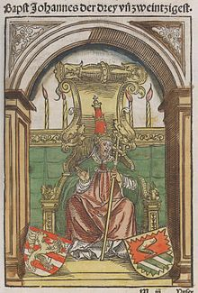
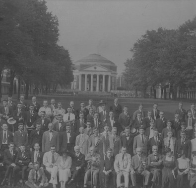

Our History
History of the Kappa Sigma Fraternity at UC Davis
The Kappa Sigma Fraternity
The Kappa Sigma Fraternity is modeled after an extinct order said to have been founded at the University of Bologna between 1395 and 1400. According to the story, Baldassare Cossa who was a one-time pirate, papal usurper and the corrupt governor of the city, took advantage of the students at Bologna, one of Europe’s preeminent universities, by sending his men to assault and rob them. This prompted one of the university’s scholars, Manuel Chrysoloras, to found a secret society of students for mutual protection against Cossa and his thugs. Chrysoloras began the order with five of his most devoted disciples, continuing to expand the order as the members gradually formed lifelong bonds, creating the foundation for Kappa Sigma as it is today - a brotherhood like no other.
Modern day Kappa Sigma was founded one cold evening in the fall of 1869, as five students attending the University of Virginia in Charlottesville gathered in the room of William Grigsby McCormick, at 46 East Lawn, planting the seeds of Brotherhood. For many weeks the bonds of friendship had drawn these five together; now the need became clear for a formal structure to contain their feelings. Thus, not only did the Founders formalize their friendship, but they also created a fraternity steeped in the traditions of the past and dedicated to the Pursuit of Learning. The new brothers recorded their bond in a Constitution and in an Oath that set forth the ideals and principles to all Kappa Sigmas today.
The Beta Phi Chapter

Our chapter name of “Beta Phi Fraternity” used to be a local Davis farming fraternity that was merged into Kappa Sigma upon its creation.
Kappa Sigma, one of the oldest fraternities at Davis, officially closed its doors for the first time in 2006.
Our Beta Phi chapter was recolonized on October 20th, 2012 but was disbanded again in 2016.
In 2019, we had yet another unsuccessful revival but, in late 2021, Jose Samano Catalan decided to bring the honor and renown of Kappa Sigma back to the University of California, Davis.
We have since grown to become one of the largest and most diverse fraternities on campus.
Kappa Sigma at UC Davis seeks to reclaim its charter and become the largest fraternity at UC Davis, providing a brotherhood like no other to hundreds of Aggies.